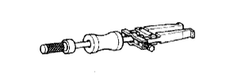
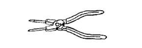

REAR AXLE SHAFT > REMOVAL > Preparation

|  | 09308-00010 | Oil Seal Puller |
| Brass bar | - |
| Chisel | - |
| Dial indicator with magnetic base | - |
| Feeler gauge | - |
| Micrometer | - |
| Press | - |
| Prussian blue | - |
| Snap ring expander | - |
| Tape | - |
| Torque wrench | - |
| Vise | - |
| Oil Type and Viscosity | Specified Condition |
| Toyota Genuine Differential gear oil LT SAE 75W-85 API GL-5 or equivalent | 1.35 to 1.45 liters (1.43 to 1.53 US qts, 1.18 to 1.27 Imp. qts.) |
| Oil Type and Viscosity | Specified Condition |
| Toyota Genuine Differential gear oil LT SAE 75W-85 API GL-5 or equivalent | 2.65 to 2.75 liters (2.80 to 2.91 US qts, 2.33 to 2.42 Imp. qts.) |
 | 09013-1C550 | "TORX" Socket Wrench E-type E14 | - |
 | 09051-1C410 | Pin Punch 5 | - |
 | 09082-00040 | TOYOTA Electrical Tester | - |
 | 09905-00012 | Snap Ring No. 1 Expander | - |
|  | 09905-00013 | Snap Ring Pliers | - |
| Toyota Genuine Seal Packing 1281, Three Bond 1281 or equivalent | - |
| Toyota Genuine Adhesive 1324, Three Bond 1324 or equivalent | - |
| Toyota Genuine Adhesive 1344, Three Bond 1344 or equivalent | - |